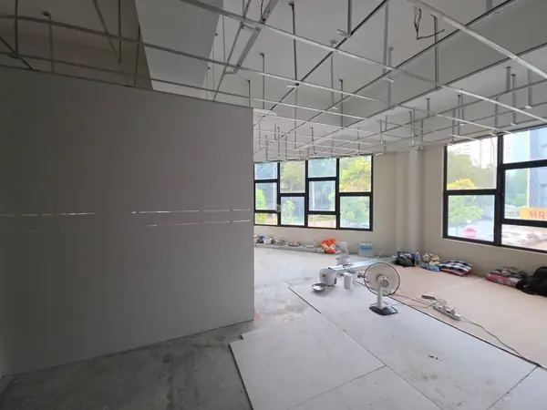
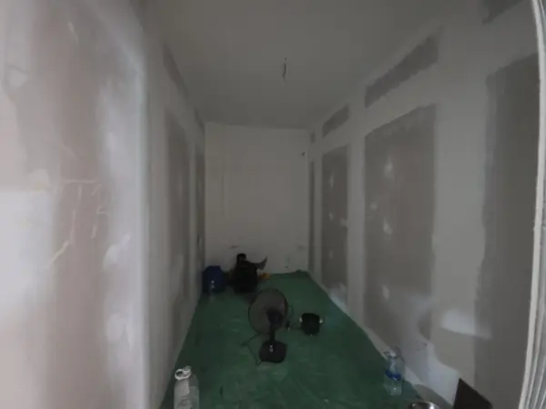
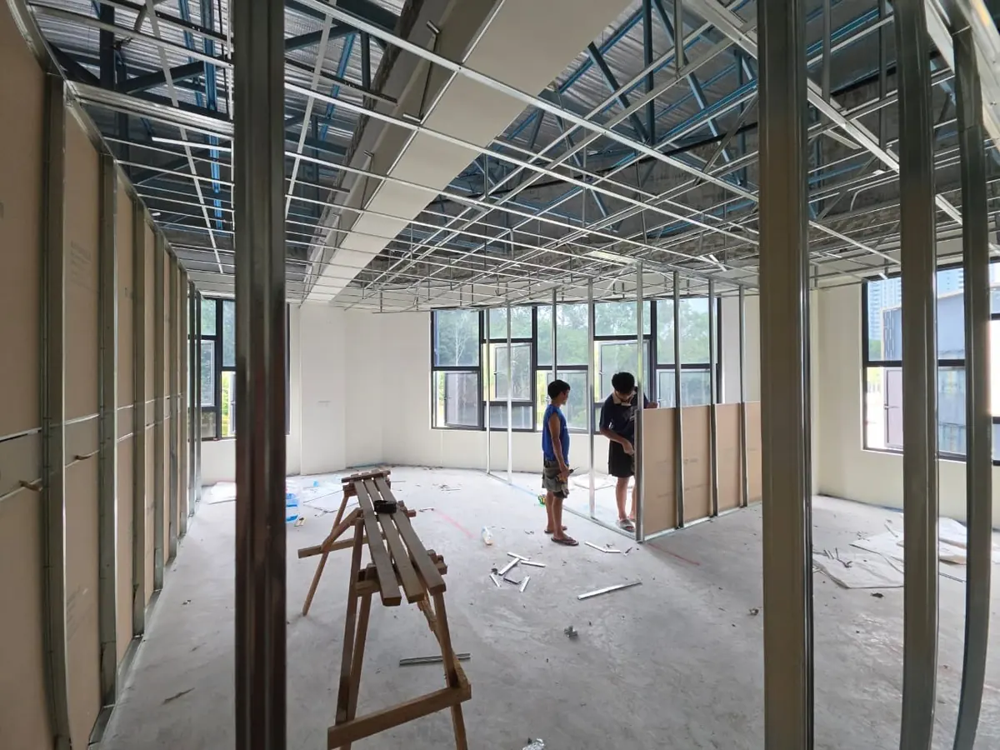

On our sites
From frame to finished wall
Photos from our fit-outs at Jade Hill and TRX Imbi, Kuala Lumpur.





New rooms, meeting rooms and back-of-house walls, built on a metal stud frame and finished ready for your painter.

Many quotes look cheaper because skimming or the second face is left out. Ours lists both sides.
Rates are per sq ft of wall area (length × height), supply and install, Klang Valley and PJ.
| Work | Rate | Notes |
|---|---|---|
| Gypsum partition, single layer both faces, skimmed | RM6.90 – 7.90 / sq ft | Final rate depends on wall height, total area and site access |
| Insulation, double board, doors, glass | Quoted | Priced from your drawing or after the site measure |
| Minimum job | RM 8,000 | Can be combined with ceiling and electrical work |
Gypsum partition is quick to build, clean on site, and easy to change when your business grows.
Private rooms, meeting rooms, server and store rooms.
Fitting rooms, back-of-house, stock rooms and feature walls.
Treatment rooms, consultation rooms and corridors.
Dividing the dining area from kitchen and store areas.
Display walls and enclosed offices on the sales floor.
Re-planning an existing unit without heavy brickwork.
Photos from our fit-outs at Jade Hill and TRX Imbi, Kuala Lumpur.


Partition prices in Malaysia vary a lot, and the cheapest number is often not the cheapest wall. When you compare quotes, check these points:
A wall without skimming still shows its joints after painting. Adding skimming later can cost more than the difference between two quotes.
Some rates are per face. A wall needs two faces, so a per-face rate has to be doubled before you compare.
We measure wall length × height. Ask other contractors the same question so you are comparing the same sq ft.
Walls, ceiling and electrical cables meet at the top of every partition. When one team does all three, nobody waits and nothing gets cut open twice. See our plaster ceiling and electrical pages.
Straight answers before you call.
Our gypsum partition starts from RM6.90 per sq ft of wall area in Klang Valley and PJ. That includes metal studs, one layer of gypsum board on both faces, joint treatment and skimming. Most jobs land between RM6.90 and RM7.90 per sq ft depending on wall height, total area and site access.
Multiply the total length of new wall by its height. For example, 120 ft of wall at 10 ft high is 1,200 sq ft. Door openings are usually not deducted, because the frame around them takes extra work.
Yes. Gypsum board on a metal stud frame is the standard wall for offices, shops and clinics. Shelves, TVs and whiteboards need extra backing inside the wall, so tell us where they go before the boards are closed.
A single-layer partition reduces noise but does not stop it. For meeting rooms and private offices we can add insulation inside the wall, a second layer of board, or run the wall up to the slab. These are quoted separately.
Yes, jobs start from RM 8,000. That is about 1,150 sq ft of partition wall, or a smaller partition job combined with ceiling or electrical work.
Location, floor plan or a few photos, and your opening date. We reply on WhatsApp.